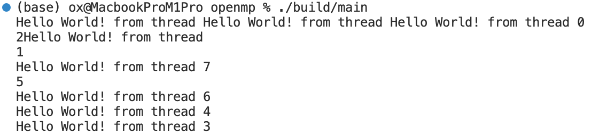

Speedrunning with OpenMP
I am going to try and see if I can make it through the Hands-on Introduction to OpenMP in one day. The goal is to learn openMP, with no obsession about being a purist. Googling for help, asking ChatGPT is all allowed as long as I document where I needed help and what exactly it contributed.
Disclaimer, I was introduced to what OpenMP was back in undergrad during our parallel programming class. Unfortunately, it was during COVID which made concentrating on the material very difficult. Anyways, I am not really starting from 0-experience with openMP because I have been exposed to many of the concepts and also am familiar with how operating systems work.
Exercise 1: Hello world
Before we start learning openMP, we first need to get it working on this laptop. First, install with:
brew install libomp
Part A is trivially easy, literally hello world with no tricks. We are only discussing part B.
The exercise is to print a multithreaded program where each thread prints hello world. The way we do this is wrapping the parallel portion of the code in a #pragma omp parallel brackets.
My first iteration starts with the following in main.cpp:
#include <iostream>
#include <omp.h>
int main() {
#pragma omp parallel
{
int thread_id = omp_get_thread_num();
std::cout << "Hello World! from thread " << thread_id << std::endl;
}
return 0;
}
However, I am only able to get one thread. I’m not sure I’m correctly calling the openMP library right now. I am very confident that my code is correct because I ran it on my Linux workstation 1 hour ago.
After nearly another hour, I realized that the CMake isn’t good at finding openMP with the find_package function. I had much more luck with a makefile. So change your makefile to this:
all:
clang -Xclang -fopenmp -L/opt/homebrew/opt/libomp/lib\
-I/opt/homebrew/opt/libomp/include -lomp -lstdc++ main.cpp -o build/main
And when you compile, you should get:

FYI, this exercise took me about an hour because the Apple M1 Pro CMake does not automatically detect the openMP version so I had to go on stack overflow.
Exercise 2: Numerical Integration
We need to do a heavy numerical integration problem to confirm that running the program in multiple threads is indeed faster than just one thread. Basically, we approximate \(\pi\) with:
[Rest of content follows similar pattern…]